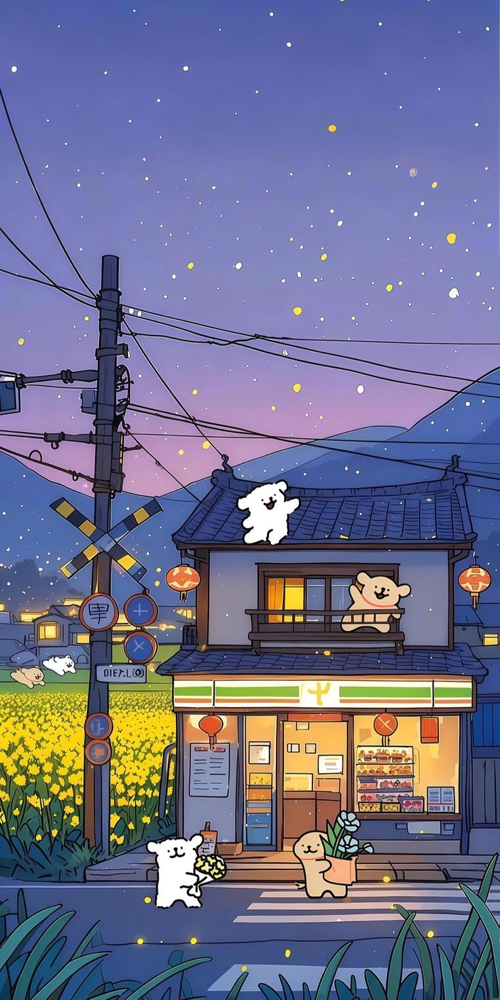
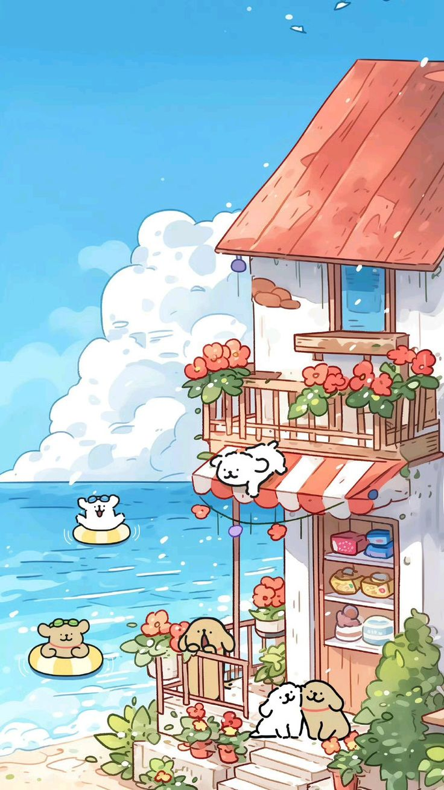
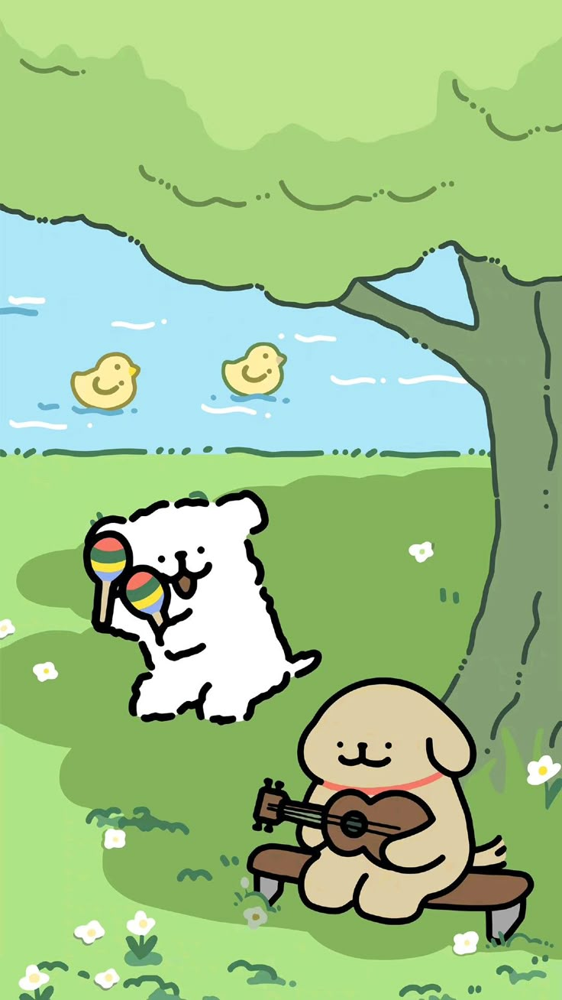

설기의
추억 여행
🎮 게임 시작
⚙️ 설정
바로 스테이지

봄에는 역시 벚꽃! 무작정 반포 한강 공원으로 가보려는데 도착한 뚝섬 유원지에서 피크닉을 잠시 즐겨보자
Stage 1 새싹의여운
🐾 Stage 2 열정의계절
🐾 Stage 3 얼음빛추억
게임 설정
배경음악 켜기
공 모양 선택
농구공
축구공
야구공
<<<<<<< Updated upstream
⬅️ 돌아가기
=======
돌아가기
>>>>>>> Stashed changes